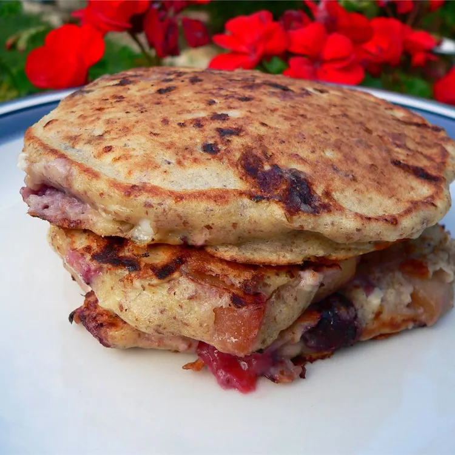

Mitho Mitho Receipe
This will guides you to make your dish yummy

Description
I love the corn dogs you buy at carnivals but wanted to make them at home so I created this easy batter for frankfurters. Great served with mustard.
Ingredeints
- 4 eggs
- 1 cup cottage cheese
- ½ cup milk
- 1 teaspoon vanilla extract
- 2 tablespoons butter, melted
- 1 peach, shredded
- 1 cup all-purpose flour
- 2 tablespoons white sugar
- 1 pinch salt
- ¾ teaspoon baking soda
- 1 teaspoon ground cinnamon
Steps
- Mix eggs, cottage cheese, milk, vanilla, butter, and peach in a large bowl. Combine flour, sugar, salt, baking soda, and cinnamon in a small bowl. Stir flour mixture into the cottage cheese mixture until just combined.
- Heat a lightly oiled griddle over medium-high heat. Drop batter by large spoonfuls onto the griddle, and cook until bubbles form and the edges are dry. Flip, and cook until browned on the other side. Repeat with remaining batter.